Buildings 119
Sort
 Gateway Arch1965 · St. Louis
Gateway Arch1965 · St. Louis Altare della Patria1911 · Rome
Altare della Patria1911 · Rome Tomb of Nader Shah1959 · Mashhad
Tomb of Nader Shah1959 · Mashhad Armenian Genocide Memorial1967 · Yerevan
Armenian Genocide Memorial1967 · Yerevan San Cataldo Cemetery1978 · Modena
San Cataldo Cemetery1978 · Modena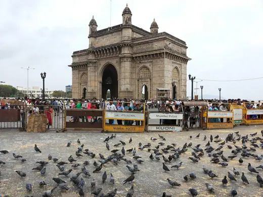
Gateway of India1924 · Mumbai Minar-e-Pakistan1968 · Lahore
Minar-e-Pakistan1968 · Lahore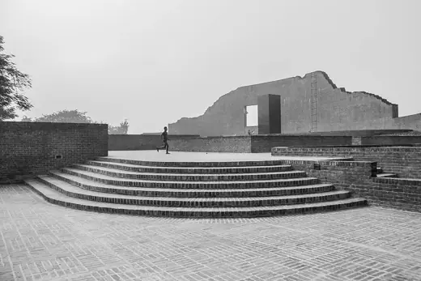
Martyred Intellectuals Memorial1999 · Dhaka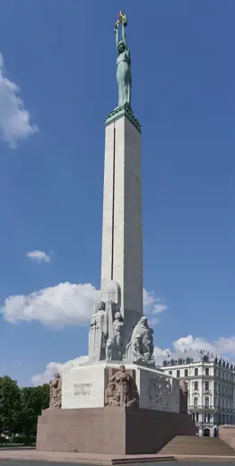
Freedom Monument1935 · Riga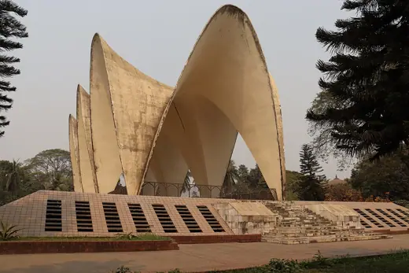
Mausoleum of Three Leaders1986 · Dhaka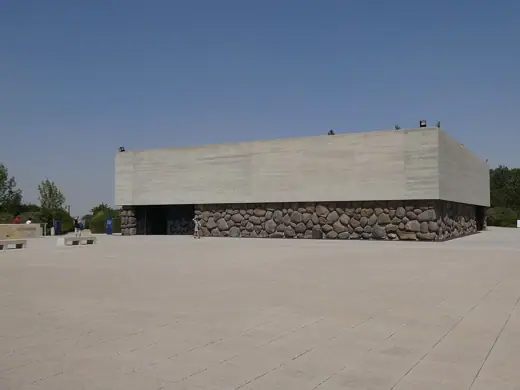
Yad Vashem Holocaust History Museum2005 · Jerusalem Memorial to the Murdered Jews of Europe2005 · Berlin
Memorial to the Murdered Jews of Europe2005 · Berlin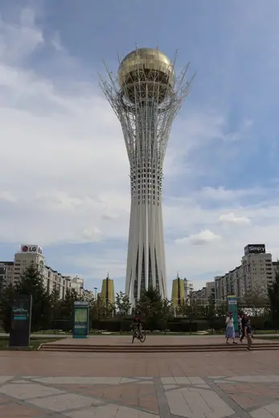
Bayterek Tower2002 · Astana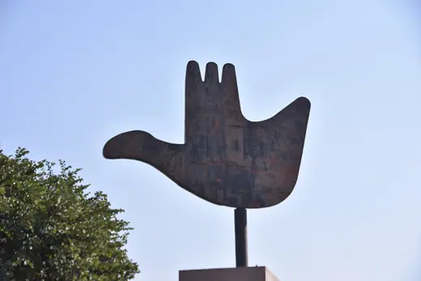
Open Hand Monument1985 · Chandigarh Anitkabir1953 · Ankara
Anitkabir1953 · Ankara Lenin's Mausoleum1930 · Moscow
Lenin's Mausoleum1930 · Moscow Australian War Memorial1941 · Canberra
Australian War Memorial1941 · Canberra Columbus Lighthouse1992 · Santo Domingo Este
Columbus Lighthouse1992 · Santo Domingo Este Dome of Soltaniyeh1312 · Soltaniyeh
Dome of Soltaniyeh1312 · Soltaniyeh Maqam Echahid1982 · Algiers
Maqam Echahid1982 · Algiers Anzac Memorial1934 · Sydney
Anzac Memorial1934 · Sydney Taj Mahal1653 · Agra
Taj Mahal1653 · Agra Igualada Cemetery1994 · Igualada
Igualada Cemetery1994 · Igualada Tomb of Hafez1935 · Shiraz
Tomb of Hafez1935 · Shiraz Al-Shaheed Monument1983 · Baghdad
Al-Shaheed Monument1983 · Baghdad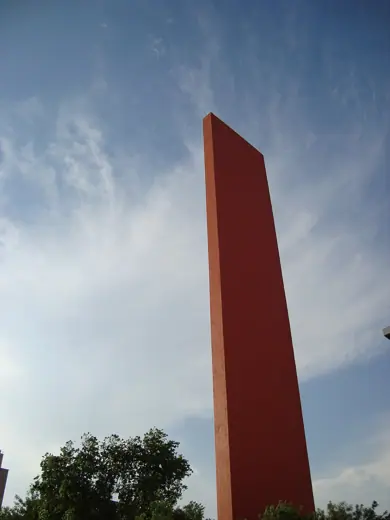
Faro del Comercio1984 · Monterrey Museum of Jewish Heritage1997 · New York City
Museum of Jewish Heritage1997 · New York City Avicenna Mausoleum1954 · Hamadan
Avicenna Mausoleum1954 · Hamadan Memorial JK1981 · Brasília
Memorial JK1981 · Brasília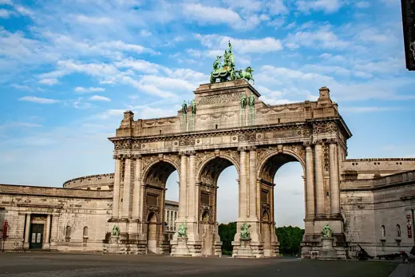
Cinquantenaire Arcade1905 · Brussels Pakistan Monument2007 · Islamabad
Pakistan Monument2007 · Islamabad Jatiyo Smriti Soudho1982 · Savar
Jatiyo Smriti Soudho1982 · Savar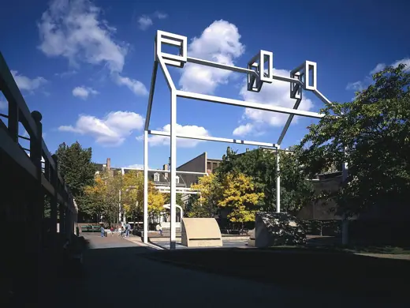
Franklin Court1976 · Philadelphia Azadi Tower1971 · Tehran
Azadi Tower1971 · Tehran National September 11 Memorial2011 · New York
National September 11 Memorial2011 · New York Mazar-e-Quaid1970 · Karachi
Mazar-e-Quaid1970 · Karachi Swadhinata Stambha2013 · Dhaka
Swadhinata Stambha2013 · Dhaka Douaumont Ossuary1932 · Douaumont
Douaumont Ossuary1932 · Douaumont Buzludzha Monument1981 · Kazanlak
Buzludzha Monument1981 · Kazanlak Arc de Triomf1888 · Barcelona
Arc de Triomf1888 · Barcelona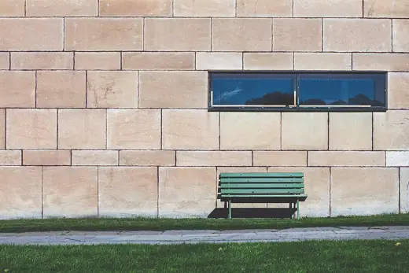
Woodland Cemetery1940 · Stockholm National Monument (Indonesia)1975 · Jakarta
National Monument (Indonesia)1975 · Jakarta Voortrekker Monument1949 · Pretoria
Voortrekker Monument1949 · Pretoria Steilneset Memorial2011 · Vardø
Steilneset Memorial2011 · Vardø